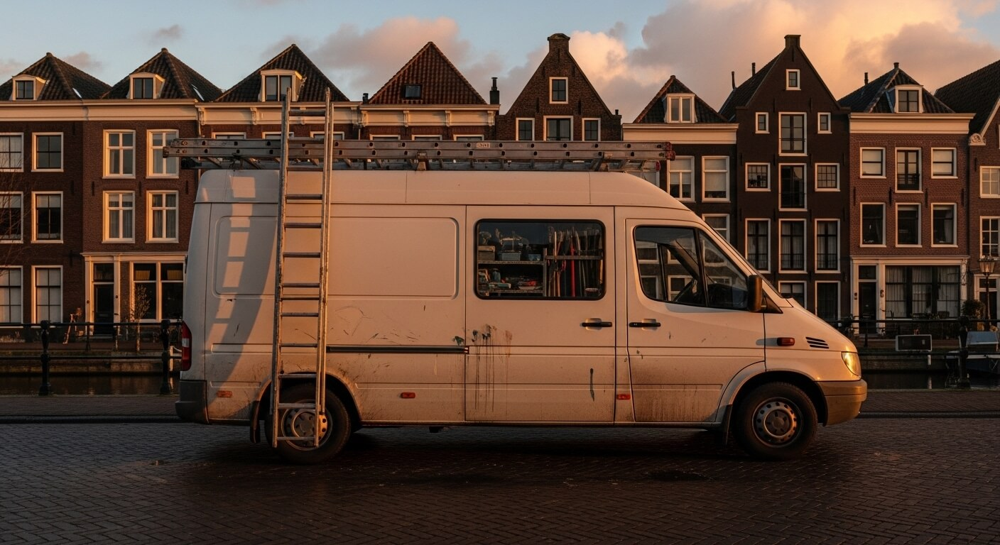

De 7 principes van tijdloos tuinontwerp
Een goed tuinontwerp gaat verder dan mooie planten kiezen. Het draait om verhoudingen, zichtlijnen, seizoensbeleving en de wisselwerking tussen hardscape en groen. In dit artikel delen wij de zeven ontwerpprincipes die wij al 17 jaar toepassen bij elk project — van compact stadstuintje tot weelderige villatuin. Ontdek hoe u met doordachte keuzes een buitenruimte creëert die met de jaren alleen maar mooier wordt.
Lees verder